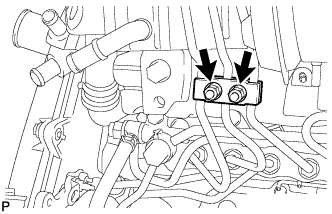
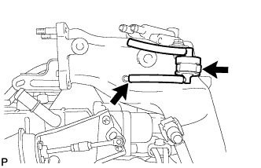
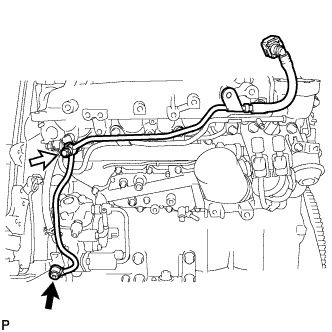
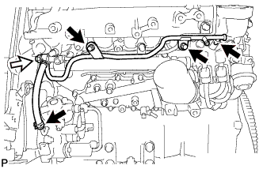

РАСПРЕДВАЛ (для моделей с DPF) > СНЯТИЕ |
| 1. ОТСОЕДИНИТЕ ПРОВОД ОТ ОТРИЦАТЕЛЬНОГО ВЫВОДА АККУМУЛЯТОРНОЙ БАТАРЕИ |
| 2. СНИМИТЕ НИЖНЮЮ ОБЛИЦОВКУ ПЕРЕДНЕГО БАМПЕРА |
Освободите фиксатор, выверните 5 болтов и снимите нижнюю накладку переднего бампера.
| 3. СНИМИТЕ ЗАЩИТУ КАРТЕРА ДВИГАТЕЛЯ № 1 В СБОРЕ |
Выверните 4 болта и снимите защиту картера двигателя № 1.
| 4. СЛЕЙТЕ ОХЛАЖДАЮЩУЮ ЖИДКОСТЬ ДВИГАТЕЛЯ |
Ослабьте пробку сливного крана радиатора.
 |
Слейте охлаждающую жидкость, сняв пробку расширительного бачка, а затем с помощью ключа снимите вентиляционную пробку.
Ослабьте пробку сливного крана блока цилиндров.

| *1 | Бачок радиатора | *2 | Вентиляционная пробка |
| *3 | Пробка сливного крана радиатора | *4 | Пробка сливного крана блока цилиндров |
| 5. СНИМИТЕ ЛЕВОЕ ПЕРЕДНЕЕ КОЛЕСО |
| 6. СНИМИТЕ УПЛОТНЕНИЕ ФАРТУКА ЛЕВОГО ПЕРЕДНЕГО КРЫЛА |
Снимите 5 фиксаторов и уплотнение фартука левого переднего крыла.
| 7. СНИМИТЕ ВЕНТИЛЯЦИОННУЮ РЕШЕТКУ В ВЕРХНЕЙ ЧАСТИ КОЖУХА В СБОРЕ |
| 8. ОТСОЕДИНИТЕ КРЫШКУ ДВИГАТЕЛЯ № 1 В СБОРЕ |
 |
Отверните 2 гайки.
| *1 | Крепление крышки двигателя № 1 |
| *2 | Кронштейн крышки двигателя № 3 |
Отсоедините 2 крепления крышки двигателя № 1 от кронштейна крышки двигателя № 3 и снимите крышку двигателя № 1.
| 9. СНИМИТЕ ВЕРХНЕЕ УПЛОТНЕНИЕ КРОНШТЕЙНА РАДИАТОРА |
Освободите 13 фиксаторов и снимите верхнее уплотнение кронштейна радиатора.
| 10. ОТСОЕДИНИТЕ ВАКУУМНУЮ ТРУБКУ № 4 В СБОРЕ |
Выверните болт и отсоедините вакуумную трубку № 4.
| 11. ОТСОЕДИНИТЕ ВОЗДУШНЫЙ ШЛАНГ ПРОМЕЖУТОЧНОГО ОХЛАДИТЕЛЯ |
Ослабьте хомут шланга и отсоедините воздушный шланг промежуточного охладителя.
| 12. СНИМИТЕ ВПУСКНОЙ ПАТРУБОК № 1 |
Отсоедините 2 разъема от датчика температуры воздуха на впуске и датчика положения дроссельной заслонки.
Освободите 2 зажима жгута проводов.
Ослабьте 2 зажима шланга и снимите воздушный шланг № 1.
Выверните 2 болта и снимите впускной патрубок № 1.
| 13. СНИМИТЕ КОРПУС ДРОССЕЛЬНОЙ ЗАСЛОНКИ ДИЗЕЛЬНОГО ДВИГАТЕЛЯ В СБОРЕ |
 |
Отсоедините разъем двигателя дроссельной заслонки.
Выверните 2 болта, отверните 2 гайки и снимите корпус дроссельной заслонки дизельного двигателя с прокладкой.
| 14. СНИМИТЕ ЭЛЕКТРОННЫЙ БЛОК ПРИВОДА ФОРСУНОК |
 |
Отсоедините 4 разъема.
Выверните 2 болта и снимите электронный блок привода форсунок в сборе.
| 15. ОТСОЕДИНИТЕ МАСЛЯНЫЙ БАЧОК ЛОПАСТНОГО НАСОСА В СБОРЕ |
Выверните 3 болта и отсоедините масляный бачок лопастного насоса.
| 16. СНИМИТЕ ОПОРУ КОЛЛЕКТОРА С ЭЛЕКТРОВАКУУМНЫМ КЛАПАНОМ |
 |
Отсоедините 3 разъема электровакуумного клапана.
Отсоедините вакуумный шланг № 1.
 |
Отсоедините 2 вакуумных шланга № 2 от клапана РОГ № 2.
 |
Отсоедините вакуумные шланги № 1 и № 4.
 |
Выверните 2 болта и снимите опору коллектора с электровакуумным клапаном.
| 17. СНИМИТЕ ТРУБКУ ПОДВОДА ТОПЛИВА |
Выверните болт и снимите зажим топливной трубки высокого давления № 2.
 |
С помощью разрезной головки на 17 мм ослабьте гайки штуцеров и снимите трубку подвода топлива.
| *a | Со стороны топливной системы Common Rail |
| *b | Сторона нагнетающего топливного насоса |
| 18. СНИМИТЕ ТОПЛИВНЫЕ ТРУБКИ ВЫСОКОГО ДАВЛЕНИЯ № 1, № 2 И № 3 В СБОРЕ |
|  |
Отверните 2 гайки и снимите зажим топливной трубки высокого давления № 3.
 |
Выверните 2 болта и снимите 2 зажима топливной трубки высокого давления № 2.
С помощью разрезной головки на 17 мм ослабьте гайки штуцеров и снимите топливные трубки высокого давления № 1, № 2 и № 3.
| *a | Со стороны форсунки |
| *b | Со стороны топливной системы Common Rail |
| 19. ОТСОЕДИНИТЕ ПАТРУБОК ОХЛАЖДАЮЩЕЙ ЖИДКОСТИ ПОДОГРЕВАТЕЛЯ В СБОРЕ |
 |
Освободите хомут перепускного шланга охлаждающей жидкости.
Выверните болт и отсоедините патрубок отопителя.
| 20. ОТСОЕДИНИТЕ ПЕРЕПУСКНОЙ ШЛАНГ ОХЛАЖДАЮЩЕЙ ЖИДКОСТИ |
Освободите 4 хомута перепускного шланга охлаждающей жидкости.
Отсоедините перепускной шланг охлаждающей жидкости № 7, обозначенный символом A на рисунке.
Отсоедините перепускной шланг охлаждающей жидкости № 4, обозначенный символом B на рисунке.
Отсоедините перепускной шланг охлаждающей жидкости № 3, обозначенный символом C на рисунке.
Отсоедините перепускной шланг охлаждающей жидкости № 8, обозначенный символом D на рисунке.
Отсоедините перепускной шланг охлаждающей жидкости № 6, обозначенный символом E на рисунке.
Отсоедините перепускной шланг охлаждающей жидкости № 5, обозначенный символом F на рисунке.

| 21. СНИМИТЕ ВАКУУМНУЮ ТРУБКУ № 1 В СБОРЕ |
Отсоедините вакуумный шланг от впускного коллектора.
Выверните болт и отсоедините вакуумную трубку № 1.
| 22. СНИМИТЕ КРОНШТЕЙН ЗАЖИМА ЖГУТА ПРОВОДОВ |
Отсоедините разъем свечи накаливания.
 |
Освободите 2 зажима жгута проводов и отсоедините разъем свечи накаливания от кронштейна зажима жгута проводов.
 |
Выверните болт и снимите кронштейн зажима жгута проводов.
| 23. СНИМИТЕ КРОНШТЕЙН КРЫШКИ ДВИГАТЕЛЯ № 3 |
 |
Отверните 2 гайки и снимите кронштейн крышки двигателя № 3.
| 24. СНИМИТЕ ИЗОЛЯТОР КРОНШТЕЙНА КРЫШКИ ДВИГАТЕЛЯ |
 |
Отверните 2 гайки и снимите 2 изолятора кронштейнов крышки двигателя.
| 25. СНИМИТЕ КРОНШТЕЙН КРЫШКИ ДВИГАТЕЛЯ № 4 |
Выверните болт и снимите кронштейн крышки двигателя № 4.
| 26. СНИМИТЕ ОПОРУ ПАТРУБКА ПОДАЧИ ВОЗДУХА |
Отсоедините 4 разъема форсунок и освободите 3 зажима жгута проводов.
Выверните болт A и отсоедините топливопровод № 1 от опоры патрубка подачи воздуха.
| *1 | Топливопровод № 1 |
Выверните 3 болта и снимите опору патрубка подачи воздуха.
| 27. СНИМИТЕ ОХЛАДИТЕЛЬ РОГ С КЛАПАНОМ РОГ № 2 В СБОРЕ |
 |
Отсоедините разъем датчика давления топлива от топливной системы Common Rail.
Отверните 4 гайки, выверните 3 болта и снимите охладитель РОГ с клапаном РОГ № 2.
Снимите 2 прокладки с головки блока цилиндров и электрического клапана управления РОГ.

| *1 | Прокладка | - | - |
| 28. СНИМИТЕ ЭЛЕКТРИЧЕСКИЙ КЛАПАН УПРАВЛЕНИЯ РОГ В СБОРЕ |
Отсоедините разъем электрического клапана управления РОГ.
 |
Снимите электрический клапан управления РОГ и прокладку с патрубка подачи воздуха.
| *1 | Патрубок подачи воздуха |
| 29. ОТСОЕДИНИТЕ ЖГУТ ПРОВОДОВ |
 |
Выверните болт и отсоедините жгут проводов.
 |
Для моделей с левосторонним рулевым управлением:
Выверните болт и отсоедините жгут проводов.
Освободите 5 зажимов и отсоедините жгут проводов от верхней панели кожуха.
| 30. СНИМИТЕ ДАТЧИК АБСОЛЮТНОГО ДАВЛЕНИЯ В КОЛЛЕКТОРЕ |
 |
Отсоедините разъем датчика абсолютного давления в коллекторе и вакуумный шланг.
Выверните болт и снимите датчик абсолютного давления в коллекторе.
| 31. СНИМИТЕ КРОНШТЕЙН КЛАПАНА СИСТЕМЫ СНИЖЕНИЯ ТОКСИЧНОСТИ ОТРАБОТАВШИХ ГАЗОВ |
 |
Выверните болт и снимите кронштейн клапана системы снижения токсичности отработавших газов.
| 32. СНИМИТЕ КРОНШТЕЙН КОРПУСА ДРОССЕЛЬНОЙ ЗАСЛОНКИ |
 |
Выверните 3 болта и снимите кронштейн корпуса дроссельной заслонки.
| 33. СНИМИТЕ ГАЗОВЫЙ ФИЛЬТР № 1 |
|  |
Отсоедините вакуумный шланг и снимите газовый фильтр № 1 с кронштейна газового фильтра.
| 34. СНИМИТЕ КРОНШТЕЙН ГАЗОВОГО ФИЛЬТРА |
 |
Освободите зажим, чтобы отсоединить жгут проводов.
 |
Выверните болт и снимите кронштейн газового фильтра.
| 35. СНИМИТЕ ПАТРУБОК ПОДАЧИ ВОЗДУХА |
 |
Выверните 3 болта и снимите патрубок подачи воздуха и прокладку.
| 36. СНИМИТЕ ТОПЛИВОПРОВОД № 1 |
Отсоедините топливопровод № 2 (Нажмите здесь).
Выверните 4 болта, пустотелый соединительный болт-штуцер и снимите прокладку и топливопровод № 1.

| *1 | Топливопровод № 2 | - | - |
 | Пустотелый соединительный болт-штуцер | - | - |
| 37. СНИМИТЕ ТОПЛИВНУЮ ТРУБКУ ВЫСОКОГО ДАВЛЕНИЯ № 4 |
 |
Выверните болт, отверните гайку и снимите 2 зажима топливной трубки высокого давления № 2.
 |
С помощью разрезной головки на 17 мм ослабьте гайки штуцеров и снимите топливную трубку высокого давления № 4.
| *a | Со стороны топливной системы Common Rail |
| *b | Со стороны форсунки |
| 38. СНИМИТЕ ТОПЛИВОПРОВОД № 2 |
|  |
С помощью шестигранного ключа на 6 мм выверните пустотелый соединительный болт-штуцер и снимите прокладку.
 | Пустотелый соединительный болт-штуцер |
| Топливный обратный клапан |
Снимите обратный топливный клапан, прокладку и топливопровод № 2.
| 39. СНИМИТЕ ТРУБОПРОВОД ОБРАТНОГО СЛИВА ТОПЛИВА № 3 |
|  |
Отсоедините 2 топливных шланга.
| Топливный обратный клапан |
Выверните 2 болта.
Снимите обратный топливный клапан, прокладку и трубопровод обратного слива топлива № 3.
| 40. СНИМИТЕ ТРУБОПРОВОД ОБРАТНОГО СЛИВА ТОПЛИВА № 2 |
 |
Выверните 3 болта.
| Пустотелый соединительный болт-штуцер |
Выверните пустотелый соединительный болт-штуцер и снимите прокладку и трубопровод обратного слива топлива № 2.
| 41. СНИМИТЕ КРЫШКУ ГОЛОВКИ БЛОКА ЦИЛИНДРОВ № 2 В СБОРЕ |
 |
Выверните 4 болта и снимите крышку головки блока цилиндров № 2.
| 42. СНИМИТЕ ТРУБКУ ВЕНТИЛЯЦИИ КАРТЕРА |
Выверните болт и отсоедините 2 шланга вентиляции картера и трубку вентиляции картера.
| 43. СНИМИТЕ КРЫШКУ ГОЛОВКИ БЛОКА ЦИЛИНДРОВ В СБОРЕ |
 |
С помощью небольшой отвертки снимите уплотнительное кольцо форсунок в головке блока цилиндров, поддев часть между уплотнительным кольцом и вырезом крышки головки блока цилиндров.
Выверните 10 болтов, отверните 2 гайки и снимите крышку головки блока цилиндров и прокладку крышки головки блока цилиндров.
| 44. СНИМИТЕ ФОРСУНКУ В СБОРЕ |
 |
Выверните пустотелый соединительный болт-штуцер, 4 полых винта форсунок и снимите 5 прокладок и трубопровод обратного слива топлива.
| *1 | Пустотелый соединительный болт-штуцер |
 |
Выверните 4 болта и снимите 4 шайбы, 4 фиксатора корпуса форсунок № 1 и 4 форсунки.
Снимите кольцевое уплотнение с каждой форсунки.
Снимите 4 седла форсунок с головки блока цилиндров.
| 45. СНИМИТЕ ПАТРУБОК РАДИАТОРА № 1 |
 |
| 46. СНИМИТЕ КОЖУХ ВЕНТИЛЯТОРА |
 |
Отсоедините перепускной шланг охлаждающей жидкости № 1, отсоедините 2 зажима от кожуха вентилятора.
Отсоедините перепускной шланг охлаждающей жидкости № 2 от расширительного бачка радиатора.
Выверните 3 болта и снимите расширительный бачок радиатора.
Для моделей с автоматической трансмиссией:
 |
Отсоедините впускной и выпускной патрубки масляного радиатора и открепите зажим от кожуха вентилятора.
Отсоедините от радиатора 2 патрубка масляного радиатора.
 |
Ослабьте 4 гайки, крепящие вентилятор с вискомуфтой.
Снимите поликлиновой ремень вентилятора и генератора (Нажмите здесь).
 |
Выверните 2 болта, крепящие кожух вентилятора.
Отверните 4 гайки вентилятора с вискомуфтой, а затем снимите кожух вместе с вентилятором с вискомуфтой.
Отсоедините перепускной шланг охлаждающей жидкости № 2 от зажима шланга на кожухе вентилятора.
 |
Отсоедините перепускной шланг охлаждающей жидкости № 2 от впускного патрубка охлаждающей жидкости.
Снимите шкив вентилятора с насоса системы охлаждения.
| 47. СНИМИТЕ КРЫШКУ РЕМНЯ ГАЗОРАСПРЕДЕЛЕНИЯ № 1 |
 |
Выверните 6 болтов и снимите 6 шайб и крышку ремня газораспределения.
| 48. СНИМИТЕ ПРИВОДНОЙ РЕМЕНЬ ГАЗОРАСПРЕДЕЛЕНИЯ |
 |
Поверните коленчатый вал по часовой стрелке и совместите установочные метки, как показано на рисунке.
| *1 | Установочная метка |
 |
Равномерно ослабьте и выверните 2 болта натяжителя приводного ремня газораспределения № 1.
Снимите приводной ремень газораспределения.
| 49. СНИМИТЕ ОПОРНЫЙ РОЛИК ПРИВОДНОГО РЕМНЯ ГАЗОРАСПРЕДЕЛЕНИЯ № 1 В СБОРЕ |
С помощью шестигранного ключа на 10 мм выверните болт и снимите опорный ролик приводного ремня газораспределения № 1 и шайбу.
| 50. СНИМИТЕ ЗУБЧАТОЕ КОЛЕСО РАСПРЕДВАЛА |
 |
Выверните болт зубчатого колеса распредвала, удерживая распредвал ключом.
Снимите зубчатое колесо распредвала.
| 51. СНИМИТЕ КРЫШКУ РЕМНЯ ГАЗОРАСПРЕДЕЛЕНИЯ № 2 |
 |
Выверните 4 болта и гайки и снимите крышку ремня газораспределения № 2.
| 52. СНИМИТЕ РАСПРЕДВАЛ |
 |
Поверните распредвал с помощью ключа таким образом, чтобы шпоночная канавка распредвала была направлена вверх.
| *1 | Шпоночная канавка |
 |
В несколько приемов равномерно ослабьте 15 болтов крышек подшипников в последовательности, показанной на рисунке.
Выверните 15 болтов крышек подшипников и снимите 5 крышек подшипников, сальник и 2 распредвала.